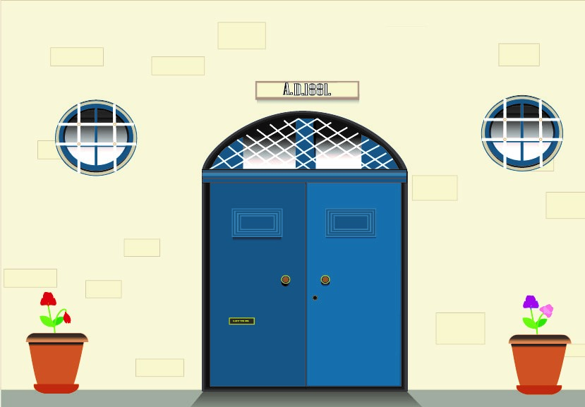
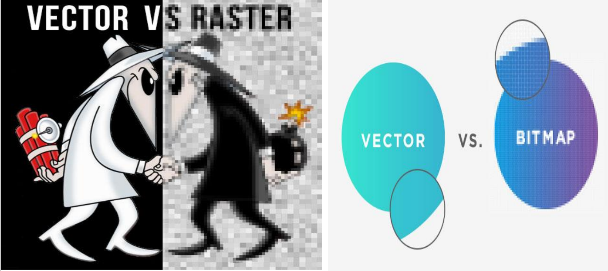

Vector

Vector illustration is made up of:
-points
-lines
-curves
that are made up of mathematical equations, rather than a solid colored square pixels.
Vector vs Raster
Raster images,also known as bitmaps which can be files such as JPEG, PNG, BMP and TIFF. A raster image is made up of many pixels that contain a particular color information that make up a grid which together combine an image.
More pixels mean increase in size or resolution for the image.However vector illustrations are different because it is made up of mathematicale calculations so that objects and lines are created instead of using pixels.
Advantages of vector illustration
- Smaller file sizes compared to a raster image, which helps in creating and opening website and other digital medias.
- Rasters need a lot of pixels to mentain a detailed and beautiful image so the more you enlareg, the image will start to blur or grain however this does not occur with vector images.
- Vectors are simple imagrey which help in communicating clearly your message.

Links
Go to reference website